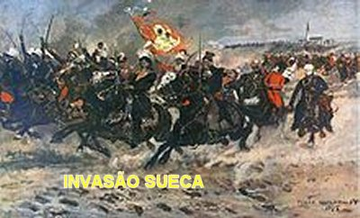
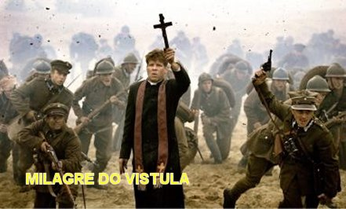
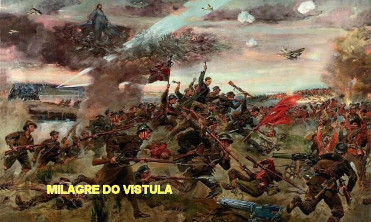
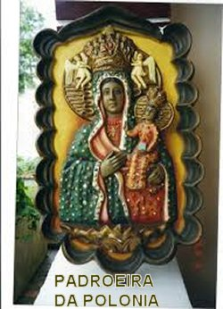
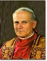
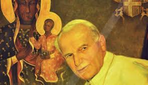

Em 1655, os Suecos invadiram a
Polônia e atacaram também o CONVENTO e o SANTUÁRIO DE CZESTOCHOWA, a fim de se
apoderarem da imagem e das 
Os frades e os outros sitiados defendiam-se heroicamente, e sobretudo, confiando na proteção de NOSSA SENHORA a noite faziam procissão com o SANTÍSSIMO SACRAMENTO ao redor do Santuário, cantando e rezando no meio dos ataques do inimigo.
Os suecos reconhecendo que lutavam contra forças sobrenaturais resolveram se afastar na noite de Natal, e pouco tempo depois, toda a tropa foi expulsa do país.
No ano seguinte em 1656, NOSSA SENHORA DE CZESTOCHOWA foi declarada oficialmente pelo Papa, RAINHA E PADROEIRA DA POLÔNIA.
O primeiro reconhecimento da imagem milagrosa foi feito pelo Papa Clemente XI em 1717. A coroa dada à imagem foi usada na primeira coroação oficial da pintura, que depois foi roubada em 1909. O Papa Pio X substituiu-o por outra de ouro incrustado com jóias.
Depois da profanação e da restauração, a fama do santuário cresceu enormemente e as peregrinações aumentaram, a ponto da Igreja original se mostrar insuficiente para conter o número de fiéis. Por isso, já na segunda metade do século XV, junto à Capela da Madona, foi iniciada a construção de uma Igreja Gótica com três grandes naves.
Em 1717 o quadro milagroso de Nossa Senhora de Jasna Góra foi coroado com o diadema papal e, a partir do século passado, foram erguidas inúmeras igrejas a ela dedicada em todo o mundo: atualmente existem cerca de 350 Igrejas em diversos países, das quais 300 Igrejas estão na Polônia.
MILAGRE DO VÍSTULA

Quatro corpos do exército da URSS comunista avançavam contra a capital católica da Polônia. No dia 14 de setembro de 1920, quando o exército russo se reuniu no rio Vístula, preparando-se para invadir Varsóvia, o povo polonês unido rezou a NOSSA SENHORA suplicando misericórdia.
Numa ordem dada aos seus soldados, o general bolchevista Mikhail Tukhachevsky foi absolutamente claro:“No caminho para a conflagração mundial comunista, tem-se que passar sobre o cadáver da Polônia”. Em Moscou, Lenin exigia ferozmente a “revolução mundial” e a aniquilação do “obstáculo polonês”. E os soldados comunistas cantavam:“Esta é nossa última e decisiva batalha. Surgirá a nova raça humana”.
Revoluções marxistas explodiam na Europa ocidental arruinada pela Primeira Guerra Mundial; a grande mídia anunciava falsamente que os russos já eram donos de Varsóvia; os embaixadores ocidentais fugiram da capital (com exceção do Núncio Apostólico, que era o futuro Papa Pio XI); os especialistas militares ocidentais davam a situação por perdida; e a confluência das hostes russas com as massas subversivas européias parecia um fato incontornável.
O Papa Bento XV enviou um apelo ao mundo católico, pedindo orações a NOSSA SENHORA DE CZESTOCHOWA (Padroeira da Polônia) e MÃE DO BOM CONSELHO, por essa nação ameaçada de naufragar no próprio sangue, perseguida pelo exército vermelho. E o jornal socialista italiano "Avanti", debochava o Papa, espalhando sarcasticamente:“Fiquem tranquilos! O Pontífice Romano acredita na eficácia da VIRGEM!”
Na Polônia, anciãos,
mulheres, adolescentes e feridos, prosternados em igrejas, ruas e praças, multiplicavam
os seus apelos ao SANTÍSSIMO SACRAMENTO
e a NOSSA SENHORA. A desproporção
das forças era evidente, e só um milagre evitaria a catástrofe. Contudo, corria de boca em boca
uma intuição, sem se saber sua origem: dia 15 de agosto, "na festa da Assunção de Nossa Senhora, ELA faria o milagre".

Apesar das tendências socialistas do marechal polonês Józef Pilsudski (1867–1935), o ESPÍRITO SANTO iluminou a sua inteligência, e coube a ele conduzir a reação contra os soviéticos. Percebendo que na linha de ofensiva dos inimigos se abrira uma brecha, empreendeu uma manobra desesperada e muito ousada: retirou de Varsóvia as tropas habilitadas ao combate, que defendiam a cidade, e colocou no lugar dessa tropa de elite, ocupando as trincheiras de Varsóvia, todos as pessoas que podiam segurar uma arma, ainda que não soubessem usá-la, além de mulheres, velhos, feridos e os escoteiros, os quais ali morreram em grande número na luta corpo a corpo contra soldados russos experimentados e cruéis.
Com o preparado destacamento que conseguiu fazer com os homens que estavam entrincheirados em Varsóvia, o marechal Pilsudski atravessou a brecha sem ser percebido pelos russos. Talvez sem se lembrarem do significado daquele grande dia 15 de agosto,"Festa da Assunção da VIRGEM MARIA aos Céus" , e deu o golpe decisivo contra os exércitos soviéticos, atacando-os de surpresa. Ao par com a estratégia e coincidência de datas, os soldados soviéticos viram naquele exato momento, surgir sobre as nuvens há pouca altura, NOSSA SENHORA DE CZESTOCHOWA, desnorteando totalmente o exército russo, e colocando-o em ampla retirada. A Polônia venceu mais essa batalha, sob o auspício e grande proteção da VIRGEM MARIA, NOSSA SENHORA, MÃE DE DEUS.
NA 2ª GUERRA MUNDIAL
Durante a ocupação nazista da Polônia na Segunda Guerra Mundial, Hitler ordenou que todas as peregrinações religiosas cessassem. Numa forte demonstração de amor a NOSSA SENHORA e de confiança na força da sua DIVINA proteção, meio milhão de poloneses foram para o Santuário rezar e suplicar a proteção da MÃE DE DEUS, em desafio às ordens de Hitler. Após a libertação da Polônia em 1945, um milhão e meio de pessoas expressaram sua gratidão a NOSSA SENHORA orando diante da imagem milagrosa no Santuário.
TENTATIVA RUSSA
Vinte e oito anos após da primeira tentativa dos russos de querer capturar a cidade de CZESTOCHOWA, durante a Segunda Grande Guerra Mundial eles conseguiram assumir o controle de Varsóvia e da nação Polonesa em 1948. Naquele ano, mais de 800.000 bravos poloneses fizeram uma peregrinação ao Santuário de Czestochowa na Festa da Assunção, durante os três dias de festa da imagem; os peregrinos tiveram que passar pelos soldados comunistas que patrulhavam as ruas, mas seguiram firme até o Santuário e participaram de todas as cerimônias.

Os milagres atribuídos a Nossa Senhora de Czestochowa são muitos e mais espetaculares. Nos relatos originais, alguns deles refere-se a curas extraordinárias e milagrosas. Todos os acontecimentos estão registrados e arquivados pelos Padres Paulinos em Jasna Gòra.
Uma reputação que sempre está aumentando e cresceu com a presença da imagem milagrosa da MÃE DE DEUS, é justamente o fato de que o antigo Mosteiro se tornou um destino constante ao longo dos anos, para as peregrinações religiosas. O culto à MADONA NEGRA DE CZESTOCHOWA se estendeu de maneira admirável a uma grande maioria dos países do mundo. Uma devoção que não tem fronteiras, que tocou o coração de muitos e que é particularmente querida - por qualquer povo que se preze - ao nosso reverenciado Santo Padre, João Paulo II, que sempre foi o devoto mais fiel de MARIA, NOSSA SENHORA.
No dia 26 de Agosto de 1956, um milhão de poloneses, unidos num só coração, renovou o Voto da Nação, repetindo as palavras do Cardeal Stefan Wyszynski ausente (preso pelo regime comunista), e renovando as promessas de fidelidade à sua Rainha, a DEUS, à Cruz, ao Evangelho, à Igreja e aos seus Pastores.
Por essas promessas eles se comprometiam a defender a vida desde a sua concepção e a mútua fidelidade no matrimônio. Prometiam, também, lutar contra qualquer vicio existente e praticar a lei do amor, respeitando a dignidade humana. Cada ano, no dia 3 de maio, esses Votos São renovados em cada paróquia e, no dia 26 de agosto, no SANTUÁRIO DE MONTE CLARO em CZESTOCHOWA, aos pés de MARIA, RAINHA DA POLÔNIA.
UM PAPA POLONÊS EM ROMA
No dia 16 de outubro de 1978,
os sinos de todas as igrejas da Polônia tocaram festivamente, anunciando que um
filho da Polônia martirizada, mas sempre fiel, Karol 
João Paulo II, antigo Arcebispo de Cracóvia, no dia seguinte à sua eleição, escreveu ao Primaz da Polônia uma carta, e terminou dizendo:
"Não haveria na sede de São Pedro um papa polonês, se não houvesse Monte Claro e o maravilhoso Primaz com sua fé heróica e inabalável confiança em MARIA, MÃE da Igreja".
No seu brasão papal, ele colocou uma grande cruz, a letra M e as palavras: TOTUS TUUS, que significa: Todo Teu - Todo de MARIA, NOSSA SENHORA.
Monte Claro, depois de tantas provas e sacrifícios, os frequentadores viram chegar radioso, cheio de esperança e fé no futuro, o dia que culminou com a visita do Santo Padre à Polônia, de 2 a 10 de junho de 1979.
Como fiel servo de MARIA, NOSSA SENHORA, o Papa chegou no dia 3 de junho a Monte Claro e permaneceu por 3 dias. Em sua peregrinação ao Brasil, de 30 de junho a 12 de julho de 1980, o Santo Padre ofereceu à imigração polonesa, um quadro com a imagem de NOSSA SENHORA DE CZESTOCHOWA.
Também, os imigrantes poloneses, ao deixarem a sua Pátria, levavam sempre consigo esse grande tesouro: "uma cópia do quadro de NOSSA SENHORA do Monte Claro" e uma grande e fervorosa devoção à MARIA SANTÍSSIMA.
Com a chegada do ano 1982, a Polônia se preparou para comemorar os 600 anos do reinado maternal de MARIA, NOSSA SENHORA, em Czestochowa. O Papa João Paulo II alimentava o grande desejo de ir agradecer, pessoalmente a VIRGEM MARIA, a proteção Materna à sua Pátria, mas o governo comunista não deu a permissão, transferindo a peregrinação para o ano de 1983.

Verdadeiramente, MARIA, NOSSA SENHORA nunca abandonou o seu reino polonês, quer nas guerras, quer nas ocupações inimigas, nas perseguições comunistas, quer em tempo de paz e em todas as circunstâncias.
Finalmente, livre do regime comunista, graças à proteção de NOSSA SENHORA DO MONTE CLARO, a Polônia respira o ambiente agradável da paz e do progresso, principalmente o clima sobrenatural no SANTUÁRIO DA VIRGEM DE CZESTOCHOWA , onde diariamente ocorrem graças de curas e conversões de pecadores. MARIA, NOSSA SENHORA sempre espera por todos que tem fé e amorosamente como filhos, sabem suplicar e demonstrar a grandeza de seu amor a ELA, ao SEU FILHO JESUS, ao ESPÍRITO SANTO e ao querido PAI ETERNO CRIADOR, e apesar das próprias fraquezas humanas, as pessoas a reconhece como MÃE e decidem seguir os SEUS passos e a amizade do SEU DIVINO FILHO JESUS.
O dia 26 de agosto é dedicado oficialmente na Polônia, a NOSSA SENHORA DE CZESTOCHOWA .
Nossa Senhora de Czestochowa, rogai por nós. Amém.